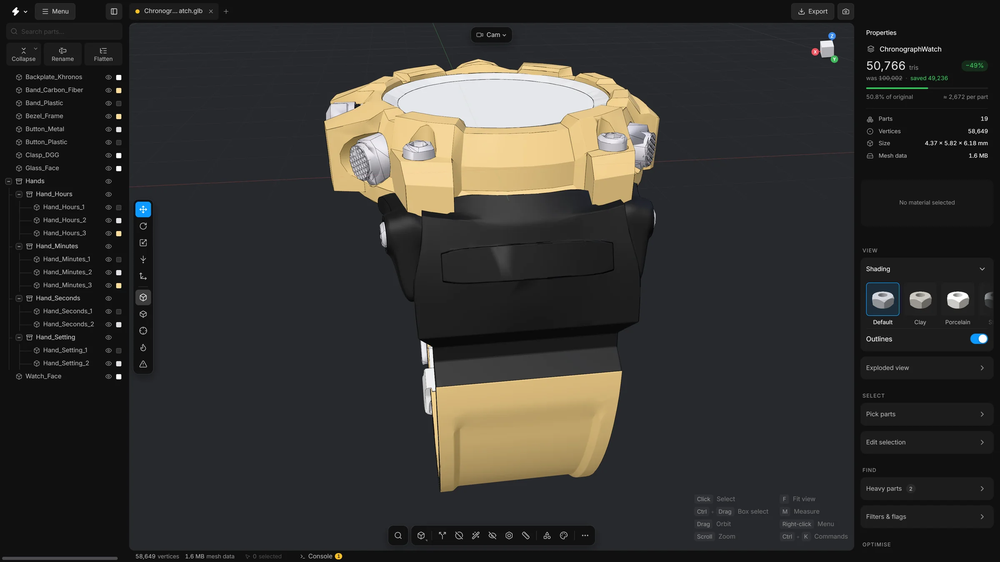
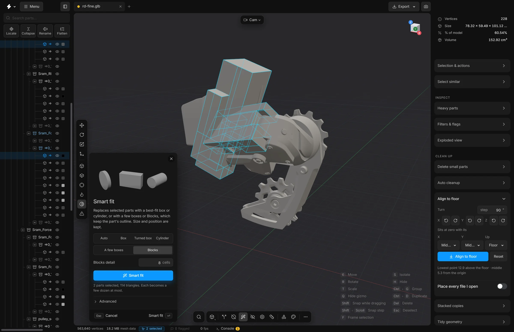
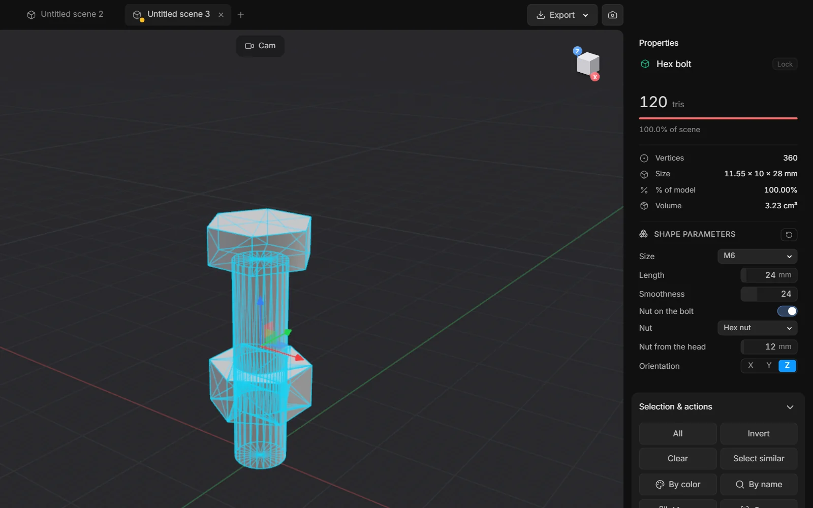

Features
A free, private viewer and optimiser for complex CAD and 3D files.








What it saves
Half the triangles, the same gearbox.
One press of Optimise on a real CAD assembly, read off the app’s own Properties card.
Result
−50% triangles 646,064 → 322,988Before and after
Triangles−50%
Vertices−45%
Memory−40%
Triangles left, by level
646,064Original
322,988Light, Balanced−50%
161,980Strong−75%
MeshOptimiser v0.15.0, Gearbox Assy (95 parts, 646,064 triangles), Smart optimise on Balanced with Reduce triangles on. Strong ends at 161,980 triangles and 1.6 MB.
STEP to GLB
Convert
- Reads the whole assemblyColours, names and the full part tree.
- Finds repeatsThe same shape at any angle becomes one mesh, drawn many times.
- Rebuilds the surfacesSet the detail in millimetres or as a share of the model.
- You set the tessellationNewSag, angle and smallest edge when a CAD file opens. By part size: big parts fine, screws light.
- Smooth from the CAD surfacesNewFillets blend in, cylinders show no seam, sharp edges stay sharp.
- CompressesMeshopt makes GLBs about ten times smaller.
- Reads IGES and BREP tooIGES and BREP open like STEP. IGES keeps names, colours and layers.
- A whole folder at once--batch converts every CAD file in a folder and reports each one.
- Level-of-detail files--lod 100,50,25 writes three files, each lighter, with the same names.
- Keeps what the CAD file knewAssembly path, part number, colour, layers and volume ride along.
- One click to startstart.bat or start.command sets up Python and opens the browser.
- Long jobs in the backgroundBig conversions run as jobs, with progress in the window.
Features
Clean up
- Smart optimiseEvery clean-up in one go. One undo.
- FastenersFinds bolts, screws, nuts and washers by shape.
- Select hidden partsPicks the parts you can’t see from outside.
- Finds copies in other tools’ filesRepeats in a GLB, FBX, OBJ or 3MF are found on open. A 600-mesh test file went from 2.72 MB to 186 KB.
- Decimate within a distanceReduce until no point moves more than the millimetres you set. Measured, not assumed.
- Remove holesNewCloses bolt holes, slots and pockets in flat faces, by size, depth and kind. No ring of points left behind.
- Remove floating piecesNewDeletes the plugs, shavings and dots that hang in the air next to a part.
- SplitNewCuts a fused mesh back into its solids, or at its creases into faces.
- Smart fitSwaps a part for a box, a cylinder or blocks that keep the outline.
- Fit to budgetSet a triangle count for the scene. The heaviest meshes go first.
- Remove hidden facesDeletes faces that never show: inside a housing, where two parts meet.
- RemeshNewUntriangulate re-cuts flat faces with the fewest triangles: a 200-triangle plate becomes 38. Triangulate is the way back.
- Stacked copiesRemoves a part only when an identical one sits in the same place.
- RecipesSave Smart optimise settings by name, run them again, share them as a file.
- Merge by colourOne mesh per colour. One undo.
- DecimateBy percentage or triangle count. Normals, UVs and vertex colours stay.
- Sharp edges stay sharpRims, steps and corners hold their shape when triangles go.
- Align to floorStands a model that arrived on its side, with a preview first.
- Delete small partsRemoves parts too small to see, plus empty, duplicate and broken ones.
- Repair meshJoins doubled vertices, drops empty triangles, fixes flipped faces.
- Merge by material or groupOne mesh per material, or one per group.
- Select by rulePick parts by name, material, group, triangles, size or state, with a live count.
- What it savedEvery action shows what it removed. Every part remembers its original count.
Features
The part tree
- Built for big assembliesTen thousand rows scroll smoothly.
- Search and filtersFind parts by name, and tint the small ones.
- Batch rename (F2)Templates, find and replace with regular expressions, a live preview, and presets.
- Flatten, dissolve, ungroupCollapse chains of single groups, dissolve a group, or ungroup a branch.
- Collapse the way you wantThe whole tree, the selection, or from the selection down.
- Organise from the right-click menuDissolve, flatten, sort, move or delete groups from one menu.
- Groups and parts togetherCtrl toggles a row, Shift picks a range. Groups and parts alike.
- Undo and redoTree edits, recolouring, renames and clean-ups share one history.
- Right-click menuHide, isolate, recolour, rename or frame a part from one menu.
Lines are parts
Draw and sweep
- A Draw tool (L)Pen, rectangle, circle, arc, polygon and freehand, on any plane or on a part’s face.
- Dots you can snap toGrid dots appear near the pointer. Clicks and handles snap to them.
- Edit any lineDrag points and handles, click to add a point, double-click for smooth or sharp.
- Round or cut the cornersDrag one corner ring and every corner follows. Round or bevel.
- A line is a row in the treeRename, hide, group or move it like any part.
- SweepCarry a profile along a path, with scale, twist and closed ends. The result is a normal part.
Features
Build
- A library of 86 partsBolts, nuts, pipe fittings, profiles and gears. Set the size, drag it in.
- Exploded viewOne slider pulls the parts apart. Three pills choose the axes.
- Dynamic place (D)Drag a part over other surfaces. It rests on them and turns to face them.
- A bolt with its own nutThe nut is part of the bolt, so it moves and undoes with it.
- Pull it apart your wayExplode along the scene’s axes, or send each part along its own direction.
- MeasureClick two points. Measurements stay in a list.
Features
Export
- GLB and glTFDraco or Meshopt compression, textures embedded if you want.
- FBX, USDZ, OBJ, STL, PLYCommon 3D and AR formats, with scale presets for mm, cm, m and inches.
- Check against where it’s goingCheck the scene against the limits for a web page, Shopify, AR Quick Look or a phone app.
- Lighter, or just faster to drawMeshopt cuts a GLB to about a quarter. Or keep the size and make it faster to draw.
- Parts listA CSV bill of materials: every part and its size.
- Name the fileFile names built from pills: date, triangle count, version. A summary before you write.
- Save sceneKeeps the view, the selection and the recolouring in a small file next to the model.
MCP
Work with Claude
- Just askSay “find the bolts and hide them” or “get this under 5 MB”. Claude uses the app’s own 65 tools.
- You decideIt asks before any change. Deleting always asks. Every change is one undo.
- Try it firstSixteen steps can be tried first: done, shown, taken back.
- One request, a whole jobGet a model under 5 MB, or ready for the web, Shopify, AR or a phone, with a before and after picture.
- A whole folderEvery model in a folder: opened, optimised, exported, closed. Stop it any time.
- Pictures for a clientClean renders up to 8192 pixels, from several angles, on a plain or transparent background, plus a turntable film.
- It knows the appSix playbooks, about fifty help articles and six ready-made jobs.
Features
The app
- Scene tabsEach tab is its own scene. Opening a file never replaces your work.
- Cards over the modelTools open as cards you can move. Enter runs, Esc closes.
- A look of your ownAccent colour, tones, font, text size, corners and density.
- Numbers you dragNewDrag any number sideways to change it, or click to type. Right-click to reset, step, double or halve it.
- Search (Shift + C)NewEvery command, setting, part and library part. A typo or initials still find it, and a switch flips right in the results.
- Floating Materials and LibraryNewPop either out as a window, move it, resize it. Both open side by side.
- Drag a material onto the modelNewDrop it on the view to assign it. Shift and a drop on another material merges the two.
- Find your selectionNewOut of view? A faint arrow at the edge points to it. Click to frame it.
- Orbit your wayNewAround the selection, the scene or the point under the pointer.
- Start screenDrop a file anywhere, open a recent one, or begin from a shape.
- Help inside the app (F1)The whole knowledge base, searchable, offline.
- One Settings windowEvery setting in one window, with one search.
- ShortcutsA searchable list of every key.
- Comes back where you left itYour files and saved scenes are still there after a reload.
- Looks after itselfThe server closes with the window. A crash is noticed at the next start.
- Your work, safe from crashesUnsaved work is kept in the browser. After a crash it is first on the start screen.
- Updates itselfA new version installs in one click. The old one is kept.
- New scenes start your wayChoose the unit and the up direction every new scene begins with.
- Every job in one placeA chip in the status bar shows what each tab is doing, and lets you cancel it.
- Point to findPoint at a row and its part lights up in the view. Point at a part and its row lights up.
- Open a folderDrop a folder and the model inside opens.
- Non-destructiveThe original geometry isn’t touched until you export.
- No build stepPlain JavaScript and CSS. Edit a file, refresh, done.
Run it on your own machine.
Free and open source, MIT. Windows and macOS. Your files never leave the computer.